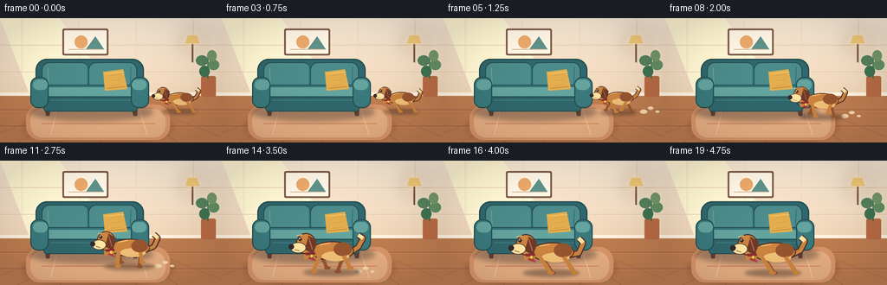
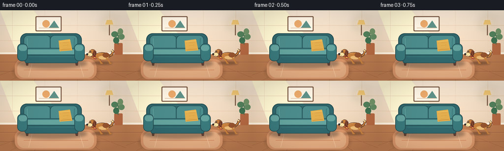

CODING AGENTS AS PIXEL WORLD MODELS
traex/GPT-5.6-Sol · dynamic_spatial_relationship_0003
点击播放 · 原生 RGB 像素
逐轮保存的候选
回放视频、检查图与代码变化。
每份候选均可单独播放。实际图片检查记录在下方工具轨迹中。
候选 01播放与检查图
点击播放 · 原生 RGB 像素


展开代码变化
--- 上一保存版本
+++ 本次保存版本
@@ -0,0 +1,309 @@
+from pathlib import Path
+import math
+import numpy as np
+from PIL import Image, ImageDraw, ImageFilter
+import artifact_io
+
+W, H, N = 256, 144, 20
+SS = 4
+SIZE = (W * SS, H * SS)
+
+
+def C(hex_string):
+ h = hex_string.lstrip('#')
+ return tuple(int(h[i:i+2], 16) for i in (0, 2, 4))
+
+
+def xy(box):
+ return tuple(int(round(v * SS)) for v in box)
+
+
+def line(draw, pts, fill, width, joint='curve'):
+ draw.line([(int(x*SS), int(y*SS)) for x, y in pts], fill=fill,
+ width=max(1, int(width*SS)), joint=joint)
+
+
+def polygon(draw, pts, fill):
+ draw.polygon([(int(x*SS), int(y*SS)) for x, y in pts], fill=fill)
+
+
+def ellipse(draw, box, fill, outline=None, width=1):
+ draw.ellipse(xy(box), fill=fill, outline=outline, width=max(1, int(width*SS)))
+
+
+def rounded(draw, box, radius, fill, outline=None, width=1):
+ draw.rounded_rectangle(xy(box), radius=int(radius*SS), fill=fill, outline=outline,
+ width=max(1, int(width*SS)))
+
+
+def make_gradient(top, bottom):
+ top = np.array(top, dtype=np.float32)
+ bottom = np.array(bottom, dtype=np.float32)
+ arr = np.empty((H*SS, W*SS, 3), dtype=np.uint8)
+ for y in range(H*SS):
+ t = y / max(1, H*SS-1)
+ arr[y, :, :] = np.clip(top*(1-t) + bottom*t, 0, 255).astype(np.uint8)
+ return Image.fromarray(arr, 'RGB')
+
+
+def soft_ellipse(img, box, color, blur):
+ layer = Image.new('RGBA', SIZE, (0, 0, 0, 0))
+ d = ImageDraw.Draw(layer)
+ d.ellipse(xy(box), fill=color)
+ layer = layer.filter(ImageFilter.GaussianBlur(blur*SS))
+ img.alpha_composite(layer)
+
+
+def draw_background(frame_index):
+ # Warm wall gradient and soft sunlight make the flat graphic scene feel dimensional.
+ base = make_gradient(C('#f8e8d4'), C('#e9c9a7')).convert('RGBA')
+ d = ImageDraw.Draw(base)
+
+ # Sunlight falling in from the unseen left window.
+ polygon(d, [(0, 0), (68, 0), (137, 88), (34, 88)], (255, 246, 210, 66))
+
+ # Fine wall panel lines.
+ for y in (31, 62):
+ line(d, [(0, y), (256, y)], (224, 190, 157, 72), 0.65)
+ for x in (25, 91, 157, 223):
+ line(d, [(x, 0), (x, 87)], (238, 211, 183, 72), 0.55)
+
+ # Framed minimalist art above the sofa.
+ rounded(d, (72, 12, 125, 43), 2, C('#7a5a45'))
+ rounded(d, (74, 14, 123, 41), 1, C('#fff5e5'))
+ ellipse(d, (86, 20, 101, 35), C('#eaa96a'))
+ polygon(d, [(99, 36), (110, 21), (120, 36)], C('#5e9187'))
+ line(d, [(79, 36), (118, 36)], C('#d4b99b'), 1)
+
+ # Small wall sconce at far right (helps establish right-side space).
+ line(d, [(222, 30), (222, 51)], C('#795744'), 2)
+ polygon(d, [(214, 29), (230, 29), (227, 20), (217, 20)], C('#f4c875'))
+ soft_ellipse(base, (206, 12, 238, 40), (255, 213, 119, 35), 7)
+ d = ImageDraw.Draw(base)
+
+ # Baseboard and wooden floor.
+ d.rectangle(xy((0, 86, 256, 90)), fill=C('#fff1dd'))
+ d.rectangle(xy((0, 90, 256, 144)), fill=C('#bd7c50'))
+ # Horizontal seams and perspective plank joins.
+ for y in (106, 125):
+ line(d, [(0, y), (256, y)], C('#9f6241'), 0.8)
+ line(d, [(0, y+1), (256, y+1)], C('#cf9365'), 0.45)
+ vanishing = (128, 87)
+ for x in (-32, 20, 69, 115, 158, 205, 272):
+ line(d, [vanishing, (x, 144)], C('#a96b47'), 0.8)
+
+ # Rug: muted enough to preserve a strong dog silhouette.
+ soft_ellipse(base, (25, 103, 201, 148), (69, 38, 30, 40), 3)
+ d = ImageDraw.Draw(base)
+ rounded(d, (30, 100, 196, 141), 16, C('#d99569'))
+ rounded(d, (35, 105, 191, 138), 14, C('#e5ad82'))
+ line(d, [(48, 122), (179, 122)], C('#cf875d'), 1)
+ line(d, [(65, 109), (58, 136)], C('#f0c39d'), 1)
+ line(d, [(161, 107), (170, 136)], C('#f0c39d'), 1)
+
+ # Plant, kept high and far right so the dog remains unambiguous.
+ rounded(d, (232, 67, 249, 91), 2, C('#b76a43'))
+ line(d, [(240, 70), (240, 44)], C('#496e4f'), 1.5)
+ for box, col in [((226, 43, 240, 55), '#54825d'), ((240, 48, 253, 60), '#648e64'),
+ ((230, 55, 242, 68), '#3f7251'), ((239, 37, 250, 50), '#73966a')]:
+ ellipse(d, box, C(col))
+
+ return base
+
+
+def draw_sofa(img):
+ # Contact shadow.
+ soft_ellipse(img, (34, 98, 177, 119), (45, 35, 31, 95), 3)
+ d = ImageDraw.Draw(img)
+
+ # Wooden feet.
+ polygon(d, [(51, 101), (59, 101), (57, 113), (53, 113)], C('#5b3e33'))
+ polygon(d, [(151, 101), (159, 101), (158, 113), (154, 113)], C('#5b3e33'))
+
+ outline = C('#244b50')
+ dark = C('#2f666b')
+ mid = C('#39777a')
+ light = C('#4b8989')
+ hi = C('#62a09b')
+
+ # Back shell and back cushions.
+ rounded(d, (41, 47, 166, 98), 13, dark, outline, 1.5)
+ rounded(d, (48, 51, 103, 84), 9, light, outline, 1.1)
+ rounded(d, (102, 51, 158, 84), 9, light, outline, 1.1)
+ line(d, [(101, 55), (101, 80)], C('#2f696c'), 1)
+ line(d, [(55, 57), (56, 78)], C('#66a19c'), 1)
+ line(d, [(151, 57), (150, 78)], C('#326e72'), 1)
+
+ # Seat cushion and front apron.
+ rounded(d, (47, 77, 161, 102), 8, mid, outline, 1.2)
+ rounded(d, (50, 79, 158, 91), 6, hi, C('#316d70'), 1)
+ line(d, [(56, 91), (153, 91)], C('#255b60'), 1)
+ rounded(d, (50, 91, 159, 108), 4, dark, outline, 1.1)
+ line(d, [(58, 95), (151, 95)], C('#448085'), 0.8)
+
+ # Distinct rolled arms.
+ rounded(d, (35, 68, 56, 104), 9, mid, outline, 1.3)
+ rounded(d, (151, 68, 172, 104), 9, mid, outline, 1.3)
+ rounded(d, (38, 71, 55, 83), 6, hi, None)
+ rounded(d, (152, 71, 169, 83), 6, hi, None)
+
+ # Mustard throw pillow provides scale and visual polish.
+ polygon(d, [(119, 62), (142, 59), (147, 82), (121, 84)], C('#dda94b'))
+ line(d, [(121, 64), (143, 62)], C('#f0c565'), 1)
+ line(d, [(123, 81), (144, 79)], C('#b98234'), 1)
+ for yy in (66, 72, 78):
+ line(d, [(128, yy), (139, yy-1)], C('#bd8838'), 0.55)
+
+
+def draw_dust(img, frame_index, x, ground_y, q):
+ if not (4 <= frame_index <= 15):
+ return
+ d = ImageDraw.Draw(img)
+ # Dust appears behind (to the right of) the left-running dog.
+ stride = (frame_index - 4) % 4
+ for j in range(3):
+ age = j + stride * 0.25
+ cx = x + 27 + age * 8
+ cy = ground_y - 2 - (j % 2) * 4
+ r = max(1.0, 4.2 - j * 0.9)
+ alpha = int(92 - j*20)
+ ellipse(d, (cx-r, cy-r*.55, cx+r, cy+r*.55), (246, 213, 174, alpha))
+
+
+def draw_leg(d, ax, ay, scale, x0, phase, color, visible=True):
+ # Two-segment limb gives a legible gallop rather than a sliding sprite.
+ swing = math.sin(phase)
+ lift = max(0.0, math.cos(phase))
+ hip = (ax + x0*scale, ay - 18*scale)
+ knee = (ax + (x0 + 5.8*swing)*scale, ay - (10 + 2.5*lift)*scale)
+ paw = (ax + (x0 + 11.5*swing)*scale, ay - (1.0 + 5.0*lift)*scale)
+ width = 4.5*scale if visible else 3.8*scale
+ line(d, [hip, knee, paw], color, width)
+ ellipse(d, (paw[0]-3.2*scale, paw[1]-1.8*scale,
+ paw[0]+4.0*scale, paw[1]+1.7*scale), color)
+
+
+def draw_dog(img, frame_index, x, ground_y, scale, moving, q):
+ # Soft moving contact shadow grows as the dog enters the foreground.
+ soft_ellipse(img, (x-31*scale, ground_y-5*scale, x+30*scale, ground_y+3*scale),
+ (49, 35, 28, 105), 2.0)
+ d = ImageDraw.Draw(img)
+
+ if moving:
+ cycle = (frame_index - 4) * math.pi * 0.72
+ bob = 1.6 * abs(math.sin(cycle))
+ else:
+ cycle = frame_index * 0.65
+ bob = 0.45 * math.sin(frame_index * 0.7) if frame_index < 4 else 0.0
+ ay = ground_y - bob*scale
+
+ fur = C('#c9823f')
+ fur_dark = C('#95542e')
+ fur_deep = C('#6d3928')
+ fur_light = C('#eebd76')
+ cream = C('#ffe0a1')
+ outline = C('#4d3027')
+
+ # Tail behind the body, with a lively upward curl / finishing wag.
+ wag = math.sin(frame_index*1.5) * (4 if not moving else 2)
+ tail_pts = [(x+18*scale, ay-20*scale),
+ (x+29*scale, ay-(26+wag)*scale),
+ (x+34*scale, ay-(36+wag*.7)*scale),
+ (x+29*scale, ay-(40+wag*.4)*scale)]
+ line(d, tail_pts, outline, 7.0*scale)
+ line(d, tail_pts, fur, 4.6*scale)
+ # Cream tail tip.
+ line(d, tail_pts[-2:], cream, 4.7*scale)
+
+ # Far legs first.
+ if moving:
+ draw_leg(d, x, ay, scale, -12, cycle+math.pi, fur_dark, False)
+ draw_leg(d, x, ay, scale, 13, cycle, fur_dark, False)
+ else:
+ draw_leg(d, x, ay, scale, -11, math.pi/2, fur_dark, False)
+ draw_leg(d, x, ay, scale, 13, math.pi/2, fur_dark, False)
+
+ # Main body silhouette, belly and saddle patch.
+ ellipse(d, (x-23*scale, ay-34*scale, x+24*scale, ay-13*scale), fur, outline, 1.2*scale)
+ ellipse(d, (x-11*scale, ay-23*scale, x+19*scale, ay-12.5*scale), fur_light)
+ ellipse(d, (x+2*scale, ay-33*scale, x+22*scale, ay-18*scale), fur_dark)
+ # Specular fur highlight.
+ line(d, [(x-13*scale, ay-30*scale), (x-2*scale, ay-32*scale)], C('#f2c17d'), 1.3*scale)
+
+ # Near legs, opposite phases.
+ if moving:
+ draw_leg(d, x, ay, scale, -13, cycle, fur, True)
+ draw_leg(d, x, ay, scale, 13, cycle+math.pi, fur, True)
+ else:
+ draw_leg(d, x, ay, scale, -13, math.pi/2, fur, True)
+ draw_leg(d, x, ay, scale, 13, math.pi/2, fur, True)
+
+ # Neck and head (dog faces left, the direction of travel).
+ polygon(d, [(x-20*scale, ay-31*scale), (x-31*scale, ay-34*scale),
+ (x-30*scale, ay-14*scale), (x-18*scale, ay-15*scale)], fur)
+ ellipse(d, (x-39*scale, ay-43*scale, x-17*scale, ay-20*scale), fur, outline, 1.2*scale)
+
+ # Floppy ear and cheek.
+ polygon(d, [(x-25*scale, ay-40*scale), (x-16*scale, ay-35*scale),
+ (x-20*scale, ay-20*scale), (x-29*scale, ay-25*scale)], fur_deep)
+ line(d, [(x-25*scale, ay-38*scale), (x-21*scale, ay-25*scale)], C('#ad6840'), 1.2*scale)
+
+ # Cream muzzle with dark nose, smile, bright eye and eyebrow.
+ ellipse(d, (x-45*scale, ay-33*scale, x-28*scale, ay-21*scale), cream, outline, 0.8*scale)
+ ellipse(d, (x-47*scale, ay-31*scale, x-41*scale, ay-25*scale), C('#332a28'))
+ ellipse(d, (x-36.2*scale, ay-38*scale, x-32.5*scale, ay-34.2*scale), C('#2f2825'))
+ ellipse(d, (x-35.4*scale, ay-37.4*scale, x-34.3*scale, ay-36.3*scale), C('#ffffff'))
+ line(d, [(x-40*scale, ay-24.8*scale), (x-35*scale, ay-23.5*scale)], outline, 0.8*scale)
+ line(d, [(x-38*scale, ay-40*scale), (x-32*scale, ay-41*scale)], fur_light, 1.2*scale)
+
+ # Red collar, loose point and brass tag create a memorable character cue.
+ line(d, [(x-28*scale, ay-20*scale), (x-18*scale, ay-21*scale)], C('#8c2930'), 3.1*scale)
+ polygon(d, [(x-22*scale, ay-19*scale), (x-17*scale, ay-12*scale),
+ (x-26*scale, ay-15*scale)], C('#b63a3a'))
+ ellipse(d, (x-24*scale, ay-20*scale, x-20*scale, ay-16*scale), C('#f3c44f'), C('#79502a'), 0.5*scale)
+
+
+def ease(t):
+ t = max(0.0, min(1.0, t))
+ return t*t*(3-2*t)
+
+
+def render_frame(i):
+ img = draw_background(i)
+ draw_sofa(img)
+
+ if i <= 3:
+ q = 0.0
+ elif i <= 15:
+ q = ease((i-3)/12.0)
+ else:
+ q = 1.0
+
+ # Curved path: leftward and toward camera (lower + larger).
+ x = 207 + (125-207)*q + 4.5*math.sin(math.pi*q)
+ ground = 109 + (131-109)*q - 2.2*math.sin(math.pi*q)
+ scale = 0.68 + 0.39*q
+ moving = 4 <= i <= 15
+
+ draw_dust(img, i, x, ground, q)
+ draw_dog(img, i, x, ground, scale, moving, q)
+
+ # Very light filmic vignette, consistent over time.
+ arr = np.asarray(img.convert('RGB')).astype(np.float32)
+ yy, xx = np.mgrid[0:H*SS, 0:W*SS]
+ nx = (xx-(W*SS-1)/2)/(W*SS/2)
+ ny = (yy-(H*SS-1)/2)/(H*SS/2)
+ vignette = np.clip(1.03 - 0.10*(nx*nx+ny*ny), 0.88, 1.03)[..., None]
+ arr = np.clip(arr*vignette, 0, 255).astype(np.uint8)
+ img = Image.fromarray(arr, 'RGB').resize((W, H), Image.Resampling.LANCZOS)
+ return np.asarray(img, dtype=np.uint8)
+
+
+def main():
+ frames = np.stack([render_frame(i) for i in range(N)], axis=0)
+ artifact_io.save(frames, Path(__file__).resolve().parent)
+ print('saved', frames.shape, frames.dtype)
+
+
+if __name__ == '__main__':
+ main()
候选 02播放与检查图
点击播放 · 原生 RGB 像素

展开代码变化
--- 上一保存版本
+++ 本次保存版本
@@ -43,7 +43,7 @@
for y in range(H*SS):
t = y / max(1, H*SS-1)
arr[y, :, :] = np.clip(top*(1-t) + bottom*t, 0, 255).astype(np.uint8)
- return Image.fromarray(arr, 'RGB')
+ return Image.fromarray(arr)
def soft_ellipse(img, box, color, blur):
@@ -295,7 +295,7 @@
ny = (yy-(H*SS-1)/2)/(H*SS/2)
vignette = np.clip(1.03 - 0.10*(nx*nx+ny*ny), 0.88, 1.03)[..., None]
arr = np.clip(arr*vignette, 0, 255).astype(np.uint8)
- img = Image.fromarray(arr, 'RGB').resize((W, H), Image.Resampling.LANCZOS)
+ img = Image.fromarray(arr).resize((W, H), Image.Resampling.LANCZOS)
return np.asarray(img, dtype=np.uint8)
可观测工具轨迹
实际执行的命令与返回图片。
命令 1exit 0
/bin/bash -lc "cat prompt.txt && printf '\\n--- GENERATION_RULES.md ---\\n' && cat GENERATION_RULES.md"
命令 2exit 0
/bin/bash -lc "cat task_spec.json && printf '\\n--- FILES ---\\n' && find . -maxdepth 2 -type f -printf '%p\\n' | sort"
命令 3exit 0
/bin/bash -lc "command -v ffmpeg || true; command -v python3 || true; python3 - <<'PY' mods=['PIL','numpy','cv2','imageio','cairo'] for m in mods: try: x=__import__(m); print(m,'OK',getattr(x,'__version__','')) except Exception as e: print(m,'NO',e) PY"
命令 4exit 0
/bin/bash -lc 'cat artifact_io.py'
命令 5exit 0
/bin/bash -lc "cat > generate.py <<'PY'
from pathlib import Path
import math
import numpy as np
from PIL import Image, ImageDraw, ImageFilter
import artifact_io
W, H, N = 256, 144, 20
SS = 4
SIZE = (W * SS, H * SS)
def C(hex_string):
h = hex_string.lstrip('#')
return tuple(int(h[i:i+2], 16) for i in (0, 2, 4))
def xy(box):
return tuple(int(round(v * SS)) for v in box)
def line(draw, pts, fill, width, joint='curve'):
draw.line([(int(x*SS), int(y*SS)) for x, y in pts], fill=fill,
width=max(1, int(width*SS)), joint=joint)
def polygon(draw, pts, fill):
draw.polygon([(int(x*SS), int(y*SS)) for x, y in pts], fill=fill)
def ellipse(draw, box, fill, outline=None, width=1):
draw.ellipse(xy(box), fill=fill, outline=outline, width=max(1, int(width*SS)))
def rounded(draw, box, radius, fill, outline=None, width=1):
draw.rounded_rectangle(xy(box), radius=int(radius*SS), fill=fill, outline=outline,
width=max(1, int(width*SS)))
def make_gradient(top, bottom):
top = np.array(top, dtype=np.float32)
bottom = np.array(bottom, dtype=np.float32)
arr = np.empty((H*SS, W*SS, 3), dtype=np.uint8)
for y in range(H*SS):
t = y / max(1, H*SS-1)
arr[y, :, :] = np.clip(top*(1-t) + bottom*t, 0, 255).astype(np.uint8)
return Image.fromarray(arr, 'RGB')
def soft_ellipse(img, box, color, blur):
layer = Image.new('RGBA', SIZE, (0, 0, 0, 0))
d = ImageDraw.Draw(layer)
d.ellipse(xy(box), fill=color)
layer = layer.filter(ImageFilter.GaussianBlur(blur*SS))
img.alpha_composite(layer)
def draw_background(frame_index):
# Warm wall gradient and soft sunlight make the flat graphic scene feel dimensional.
base = make_gradient(C('#f8e8d4'), C('#e9c9a7')).convert('RGBA')
d = ImageDraw.Draw(base)
# Sunlight falling in from the unseen left window.
polygon(d, [(0, 0), (68, 0), (137, 88), (34, 88)], (255, 246, 210, 66))
# Fine wall panel lines.
for y in (31, 62):
line(d, [(0, y), (256, y)], (224, 190, 157, 72), 0.65)
for x in (25, 91, 157, 223):
line(d, [(x, 0), (x, 87)], (238, 211, 183, 72), 0.55)
# Framed minimalist art above the sofa.
rounded(d, (72, 12, 125, 43), 2, C('#7a5a45'))
rounded(d, (74, 14, 123, 41), 1, C('#fff5e5'))
ellipse(d, (86, 20, 101, 35), C('#eaa96a'))
polygon(d, [(99, 36), (110, 21), (120, 36)], C('#5e9187'))
line(d, [(79, 36), (118, 36)], C('#d4b99b'), 1)
# Small wall sconce at far right (helps establish right-side space).
line(d, [(222, 30), (222, 51)], C('#795744'), 2)
polygon(d, [(214, 29), (230, 29), (227, 20), (217, 20)], C('#f4c875'))
soft_ellipse(base, (206, 12, 238, 40), (255, 213, 119, 35), 7)
d = ImageDraw.Draw(base)
# Baseboard and wooden floor.
d.rectangle(xy((0, 86, 256, 90)), fill=C('#fff1dd'))
d.rectangle(xy((0, 90, 256, 144)), fill=C('#bd7c50'))
# Horizontal seams and perspective plank joins.
for y in (106, 125):
line(d, [(0, y), (256, y)], C('#9f6241'), 0.8)
line(d, [(0, y+1), (256, y+1)], C('#cf9365'), 0.45)
vanishing = (128, 87)
for x in (-32, 20, 69, 115, 158, 205, 272):
line(d, [vanishing, (x, 144)], C('#a96b47'), 0.8)
# Rug: muted enough to preserve a strong dog silhouette.
soft_ellipse(base, (25, 103, 201, 148), (69, 38, 30, 40), 3)
d = ImageDraw.Draw(base)
rounded(d, (30, 100, 196, 141), 16, C('#d99569'))
rounded(d, (35, 105, 191, 138), 14, C('#e5ad82'))
line(d, [(48, 122), (179, 122)], C('#cf875d'), 1)
line(d, [(65, 109), (58, 136)], C('#f0c39d'), 1)
line(d, [(161, 107), (170, 136)], C('#f0c39d'), 1)
# Plant, kept high and far right so the dog remains unambiguous.
rounded(d, (232, 67, 249, 91), 2, C('#b76a43'))
line(d, [(240, 70), (240, 44)], C('#496e4f'), 1.5)
for box, col in [((226, 43, 240, 55), '#54825d'), ((240, 48, 253, 60), '#648e64'),
((230, 55, 242, 68), '#3f7251'), ((239, 37, 250, 50), '#73966a')]:
ellipse(d, box, C(col))
return base
def draw_sofa(img):
# Contact shadow.
soft_ellipse(img, (34, 98, 177, 119), (45, 35, 31, 95), 3)
d = ImageDraw.Draw(img)
# Wooden feet.
polygon(d, [(51, 101), (59, 101), (57, 113), (53, 113)], C('#5b3e33'))
polygon(d, [(151, 101), (159, 101), (158, 113), (154, 113)], C('#5b3e33'))
outline = C('#244b50')
dark = C('#2f666b')
mid = C('#39777a')
light = C('#4b8989')
hi = C('#62a09b')
# Back shell and back cushions.
rounded(d, (41, 47, 166, 98), 13, dark, outline, 1.5)
rounded(d, (48, 51, 103, 84), 9, light, outline, 1.1)
rounded(d, (102, 51, 158, 84), 9, light, outline, 1.1)
line(d, [(101, 55), (101, 80)], C('#2f696c'), 1)
line(d, [(55, 57), (56, 78)], C('#66a19c'), 1)
line(d, [(151, 57), (150, 78)], C('#326e72'), 1)
# Seat cushion and front apron.
rounded(d, (47, 77, 161, 102), 8, mid, outline, 1.2)
rounded(d, (50, 79, 158, 91), 6, hi, C('#316d70'), 1)
line(d, [(56, 91), (153, 91)], C('#255b60'), 1)
rounded(d, (50, 91, 159, 108), 4, dark, outline, 1.1)
line(d, [(58, 95), (151, 95)], C('#448085'), 0.8)
# Distinct rolled arms.
rounded(d, (35, 68, 56, 104), 9, mid, outline, 1.3)
rounded(d, (151, 68, 172, 104), 9, mid, outline, 1.3)
rounded(d, (38, 71, 55, 83), 6, hi, None)
rounded(d, (152, 71, 169, 83), 6, hi, None)
# Mustard throw pillow provides scale and visual polish.
polygon(d, [(119, 62), (142, 59), (147, 82), (121, 84)], C('#dda94b'))
line(d, [(121, 64), (143, 62)], C('#f0c565'), 1)
line(d, [(123, 81), (144, 79)], C('#b98234'), 1)
for yy in (66, 72, 78):
line(d, [(128, yy), (139, yy-1)], C('#bd8838'), 0.55)
def draw_dust(img, frame_index, x, ground_y, q):
if not (4 <= frame_index <= 15):
return
d = ImageDraw.Draw(img)
# Dust appears behind (to the right of) the left-running dog.
stride = (frame_index - 4) % 4
for j in range(3):
age = j + stride * 0.25
cx = x + 27 + age * 8
cy = ground_y - 2 - (j % 2) * 4
r = max(1.0, 4.2 - j * 0.9)
alpha = int(92 - j*20)
ellipse(d, (cx-r, cy-r*.55, cx+r, cy+r*.55), (246, 213, 174, alpha))
def draw_leg(d, ax, ay, scale, x0, phase, color, visible=True):
# Two-segment limb gives a legible gallop rather than a sliding sprite.
swing = math.sin(phase)
lift = max(0.0, math.cos(phase))
hip = (ax + x0*scale, ay - 18*scale)
knee = (ax + (x0 + 5.8*swing)*scale, ay - (10 + 2.5*lift)*scale)
paw = (ax + (x0 + 11.5*swing)*scale, ay - (1.0 + 5.0*lift)*scale)
width = 4.5*scale if visible else 3.8*scale
line(d, [hip, knee, paw], color, width)
ellipse(d, (paw[0]-3.2*scale, paw[1]-1.8*scale,
paw[0]+4.0*scale, paw[1]+1.7*scale), color)
def draw_dog(img, frame_index, x, ground_y, scale, moving, q):
# Soft moving contact shadow grows as the dog enters the foreground.
soft_ellipse(img, (x-31*scale, ground_y-5*scale, x+30*scale, ground_y+3*scale),
(49, 35, 28, 105), 2.0)
d = ImageDraw.Draw(img)
if moving:
cycle = (frame_index - 4) * math.pi * 0.72
bob = 1.6 * abs(math.sin(cycle))
else:
cycle = frame_index * 0.65
bob = 0.45 * math.sin(frame_index * 0.7) if frame_index < 4 else 0.0
ay = ground_y - bob*scale
fur = C('#c9823f')
fur_dark = C('#95542e')
fur_deep = C('#6d3928')
fur_light = C('#eebd76')
cream = C('#ffe0a1')
outline = C('#4d3027')
# Tail behind the body, with a lively upward curl / finishing wag.
wag = math.sin(frame_index*1.5) * (4 if not moving else 2)
tail_pts = [(x+18*scale, ay-20*scale),
(x+29*scale, ay-(26+wag)*scale),
(x+34*scale, ay-(36+wag*.7)*scale),
(x+29*scale, ay-(40+wag*.4)*scale)]
line(d, tail_pts, outline, 7.0*scale)
line(d, tail_pts, fur, 4.6*scale)
# Cream tail tip.
line(d, tail_pts[-2:], cream, 4.7*scale)
# Far legs first.
if moving:
draw_leg(d, x, ay, scale, -12, cycle+math.pi, fur_dark, False)
draw_leg(d, x, ay, scale, 13, cycle, fur_dark, False)
else:
draw_leg(d, x, ay, scale, -11, math.pi/2, fur_dark, False)
draw_leg(d, x, ay, scale, 13, math.pi/2, fur_dark, False)
# Main body silhouette, belly and saddle patch.
ellipse(d, (x-23*scale, ay-34*scale, x+24*scale, ay-13*scale), fur, outline, 1.2*scale)
ellipse(d, (x-11*scale, ay-23*scale, x+19*scale, ay-12.5*scale), fur_light)
ellipse(d, (x+2*scale, ay-33*scale, x+22*scale, ay-18*scale), fur_dark)
# Specular fur highlight.
line(d, [(x-13*scale, ay-30*scale), (x-2*scale, ay-32*scale)], C('#f2c17d'), 1.3*scale)
# Near legs, opposite phases.
if moving:
draw_leg(d, x, ay, scale, -13, cycle, fur, True)
draw_leg(d, x, ay, scale, 13, cycle+math.pi, fur, True)
else:
draw_leg(d, x, ay, scale, -13, math.pi/2, fur, True)
draw_leg(d, x, ay, scale, 13, math.pi/2, fur, True)
# Neck and head (dog faces left, the direction of travel).
polygon(d, [(x-20*scale, ay-31*scale), (x-31*scale, ay-34*scale),
(x-30*scale, ay-14*scale), (x-18*scale, ay-15*scale)], fur)
ellipse(d, (x-39*scale, ay-43*scale, x-17*scale, ay-20*scale), fur, outline, 1.2*scale)
# Floppy ear and cheek.
polygon(d, [(x-25*scale, ay-40*scale), (x-16*scale, ay-35*scale),
(x-20*scale, ay-20*scale), (x-29*scale, ay-25*scale)], fur_deep)
line(d, [(x-25*scale, ay-38*scale), (x-21*scale, ay-25*scale)], C('#ad6840'), 1.2*scale)
# Cream muzzle with dark nose, smile, bright eye and eyebrow.
ellipse(d, (x-45*scale, ay-33*scale, x-28*scale, ay-21*scale), cream, outline, 0.8*scale)
ellipse(d, (x-47*scale, ay-31*scale, x-41*scale, ay-25*scale), C('#332a28'))
ellipse(d, (x-36.2*scale, ay-38*scale, x-32.5*scale, ay-34.2*scale), C('#2f2825'))
ellipse(d, (x-35.4*scale, ay-37.4*scale, x-34.3*scale, ay-36.3*scale), C('#ffffff'))
line(d, [(x-40*scale, ay-24.8*scale), (x-35*scale, ay-23.5*scale)], outline, 0.8*scale)
line(d, [(x-38*scale, ay-40*scale), (x-32*scale, ay-41*scale)], fur_light, 1.2*scale)
# Red collar, loose point and brass tag create a memorable character cue.
line(d, [(x-28*scale, ay-20*scale), (x-18*scale, ay-21*scale)], C('#8c2930'), 3.1*scale)
polygon(d, [(x-22*scale, ay-19*scale), (x-17*scale, ay-12*scale),
(x-26*scale, ay-15*scale)], C('#b63a3a'))
ellipse(d, (x-24*scale, ay-20*scale, x-20*scale, ay-16*scale), C('#f3c44f'), C('#79502a'), 0.5*scale)
def ease(t):
t = max(0.0, min(1.0, t))
return t*t*(3-2*t)
def render_frame(i):
img = draw_background(i)
draw_sofa(img)
if i <= 3:
q = 0.0
elif i <= 15:
q = ease((i-3)/12.0)
else:
q = 1.0
# Curved path: leftward and toward camera (lower + larger).
x = 207 + (125-207)*q + 4.5*math.sin(math.pi*q)
ground = 109 + (131-109)*q - 2.2*math.sin(math.pi*q)
scale = 0.68 + 0.39*q
moving = 4 <= i <= 15
draw_dust(img, i, x, ground, q)
draw_dog(img, i, x, ground, scale, moving, q)
# Very light filmic vignette, consistent over time.
arr = np.asarray(img.convert('RGB')).astype(np.float32)
yy, xx = np.mgrid[0:H*SS, 0:W*SS]
nx = (xx-(W*SS-1)/2)/(W*SS/2)
ny = (yy-(H*SS-1)/2)/(H*SS/2)
vignette = np.clip(1.03 - 0.10*(nx*nx+ny*ny), 0.88, 1.03)[..., None]
arr = np.clip(arr*vignette, 0, 255).astype(np.uint8)
img = Image.fromarray(arr, 'RGB').resize((W, H), Image.Resampling.LANCZOS)
return np.asarray(img, dtype=np.uint8)
def main():
frames = np.stack([render_frame(i) for i in range(N)], axis=0)
artifact_io.save(frames, Path(__file__).resolve().parent)
print('saved', frames.shape, frames.dtype)
if __name__ == '__main__':
main()
PY
python3 generate.py
python3 - <<'PY'
import numpy as np
from PIL import Image
z=np.load('pixels.npz')['pixels']
print('pixels',z.shape,z.dtype,'range',int(z.min()),int(z.max()))
print('frames',len(list(__import__('pathlib').Path('frames').glob('*.png'))))
Image.open('inspection.png').save('.tmp/inspection_copy.png')
PY"命令 6exit 0
/bin/bash -lc 'python3 -m py_compile generate.py artifact_io.py && git status --short 2>/dev/null || true'
命令 7exit 0
/bin/bash -lc "python3 generate.py && python3 - <<'PY'
from pathlib import Path
from PIL import Image
import numpy as np, json
spec=json.load(open('task_spec.json'))
files=sorted(Path('frames').glob('*.png'))
assert len(files)==spec['frames']==20
for f in files:
im=Image.open(f)
assert im.size==(256,144) and im.mode=='RGB', (f,im.size,im.mode)
z=np.load('pixels.npz')['pixels']
assert z.shape==(144,256,20) and z.dtype==np.uint32
# frame uniqueness and continuity summaries
ims=np.stack([np.asarray(Image.open(f),dtype=np.int16) for f in files])
mad=np.abs(np.diff(ims,axis=0)).mean(axis=(1,2,3))
print('VALID: 20 RGB frames, 256x144, pixels.npz packed')
print('adjacent mean abs deltas:',np.round(mad,2).tolist())
print('outputs:',[(p.name,p.stat().st_size) for p in [Path('pixels.npz'),Path('inspection.png'),Path('index.html')]])
PY"保存候选 2 份；完成命令 7 次；可验证图片返回 0 张。原始 API 响应与完整日志保留在本地。